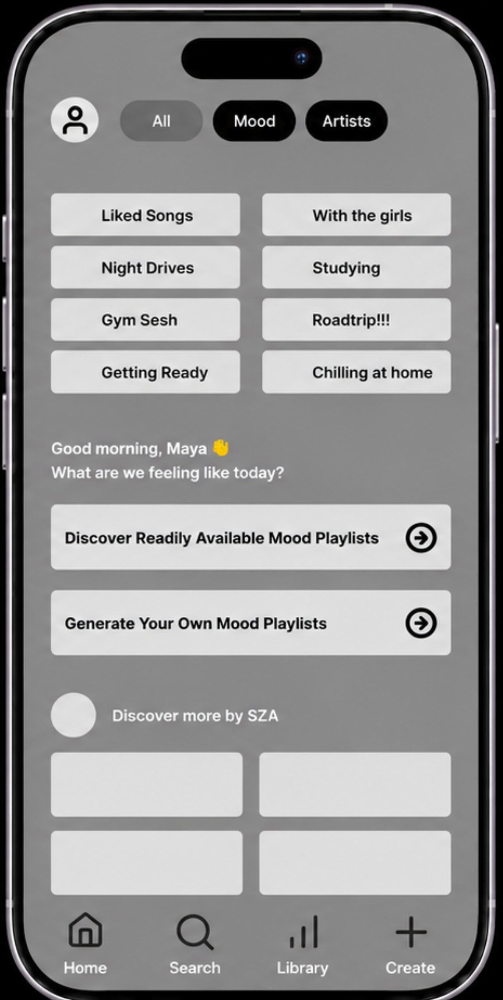
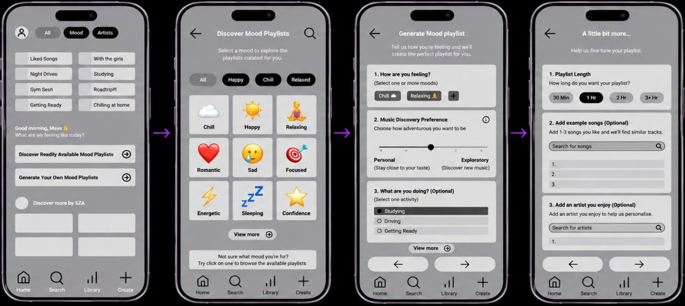
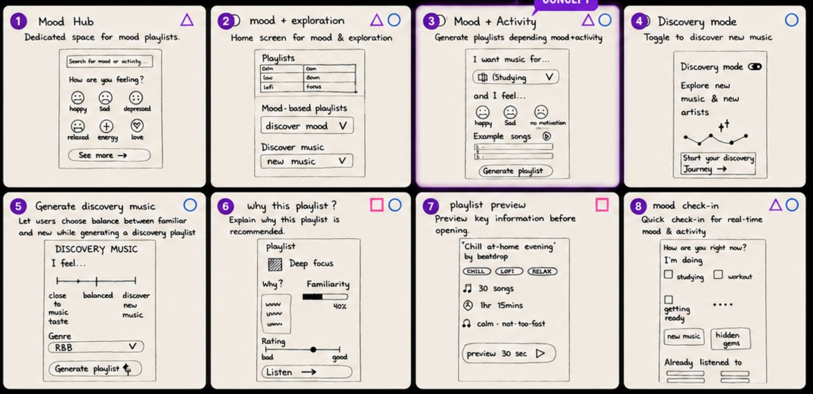
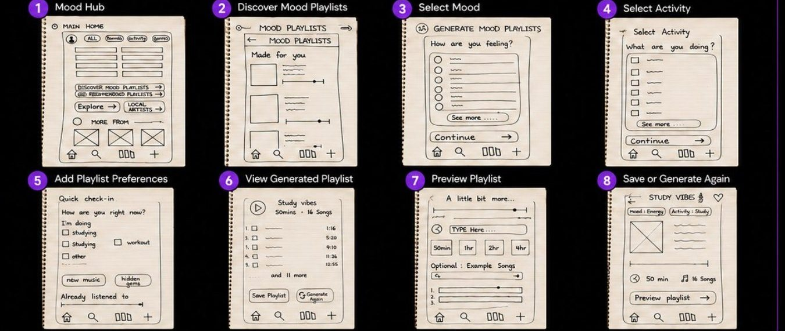
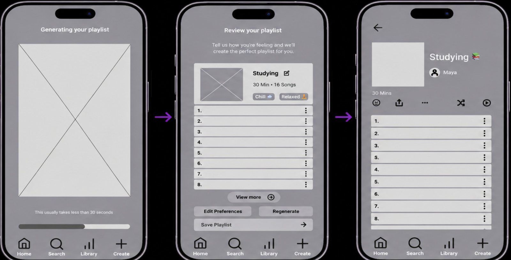

A mood-based playlist experience that helps music listeners discover and generate playlists matching how they feel right now.
based on your mood, not just your history

first things first
People want playlists that match how they feel right now. But music apps make discovery feel repetitive, because it's driven by what you've already listened to.
Help users quickly generate personalised, mood-based playlists, and make discovery feel intuitive, transparent and flexible.
the short version
DropBeat puts mood first. Pick from curated mood playlists, or answer a few quick questions (how you feel, how adventurous you're feeling, what you're doing) and get a playlist you can review, tweak and save.

how I got there
size up the competition
I benchmarked Spotify, Apple Music and SoundCloud across the same three flows (creating a playlist, discovering music, finding mood playlists), scoring navigation, personalisation, discovery approach, ease of use and number of steps.
✓ Huge library, strong personalised mixes
✕ Overly dependent on listening history; mood playlists hard to reach
✓ Curated editorial playlists, good mood stations
✕ Less personal; little control over playlist generation
✓ Great for emerging artists and niche content
✕ Poor curation, limited mood features
listen to real listeners
the goal wasn't to validate the design. it was to find the problems early.
21, uni student in Melbourne. Listens all day while studying, commuting and relaxing. Loves new artists but gets worn down by repetitive recommendations.
"I know the kind of music I want to listen to, but sometimes it takes too long to find a playlist that actually matches my mood."
60+ sticky notes, 6 themes, 5 insights
I affinity-mapped 60+ observations from interviews and testing into six themes: mood & activity, discoverability, limited discovery, playlist decision-making, need for personalisation, and trust & confidence. Then I prioritised the five insights with the biggest impact.
8 ideas, 8 minutes, 1 winner
I ran a Crazy 8s to explore eight different ways people could find mood-based playlists and new music before committing to one.

Tackles the biggest problem: mood content is hard to discover.
Two clear inputs, mood and activity, that are easy to understand and build.
Users can see what the playlist is based on before generating it.
Room for discovery while still matching mood and activity.
paper first, pixels later
I turned the winning concept into a low-fidelity prototype covering the full flow, so I could test the core idea before spending time on visual design.

hand it over and watch
3 participants worked through the low-fi prototype using think-aloud, then filled in a System Usability Scale questionnaire.
User story tested: "I've been studying all day and want music that matches how I'm feeling."
Nobody noticed how to move on from the Playlist Info screen. 3/3 confused.
"Personal vs Exploratory" was misunderstood by 3/3; "Example Songs" by 2/3.
People expected to pick multiple options; checkboxes vs circles confused them.
They wanted to review and edit the playlist before saving it.
fix it, then go mid-fi

the final mix
SUS score from usability testing
research observations synthesised
priority usability fixes applied in the final prototype
looking back
A great score doesn't mean a finished design. DropBeat scored 91.7, yet every single tester got stuck on the same label. The number told me it was usable; watching people use it told me what to fix. I'll always pair the two now.
Take it to high fidelity with a full visual design, then test again with more people to check the fixes actually landed, especially the discovery slider and the review-before-saving step.